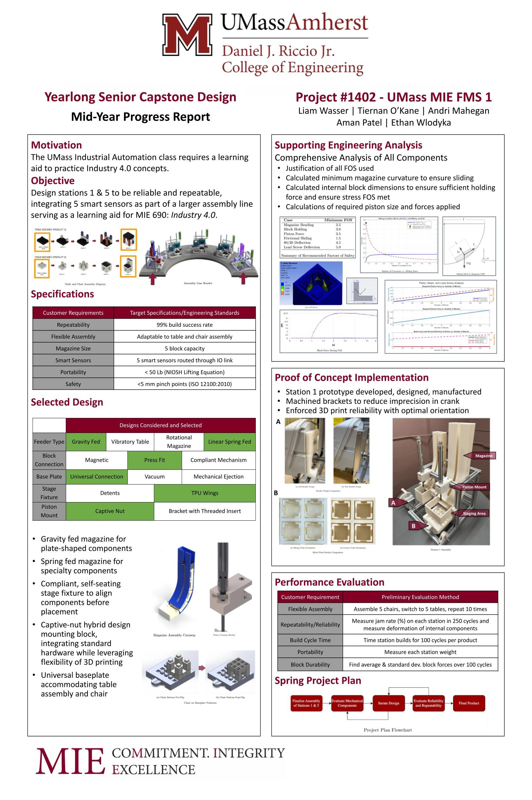
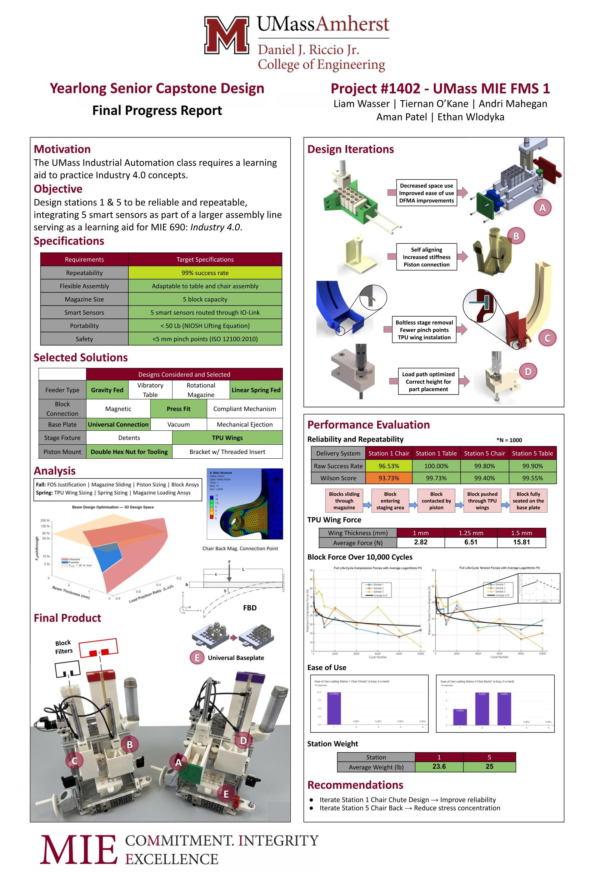

club_school_projects
senior_capstone_design
Created a hands-on automated assembly learning tool for the UMASS Mechanical Engineering Department, featuring 5 smart-sensor-equipped assembly stations and a UR5e robotic arm. The stations must be mechanically sound, reliable, and repeatable in performing chair and table assembly. My role as the analysis lead was the validation of the design, as well as communicating with the design lead to update the design and ensure that all chosen components meet the loads of the system. The final design of Station 1 & 5 in this assembly line (our scope of work) was successful, achieving reliability of above 95%.

Fall showcase poster

Spring showcase poster